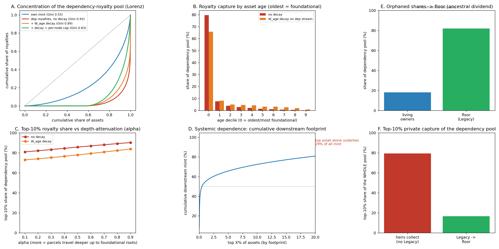

In plain language
Companion to RESULTS - Network & Dependency Graph. Companion added July 11, 2026 — the v1–v5-era runs predate the plain-language convention; written from the committed RESULTS as it stands today (including any verification-pass corrections already applied in that file), with no reinterpretation.
The question
EDEN routes 10% of every mint up the chain of earlier work an asset is built on — "pay the stack." Real software and data ecosystems are scale-free: a few foundational assets (a base dataset, a core library, a reference model) sit underneath almost everything. So do the owners of those few assets end up collecting a slice of all downstream activity while they live, and does the network have dangerous single points of failure?
What we found
Left unmitigated, the dependency pool concentrates severely — but only within a lifetime, because a dead owner's asset stops earning entirely. Unmitigated dependency royalties reach a Gini of 0.93 with the top 10% capturing 87% of the pool (own-mint, for comparison, sits at 0.55), and the oldest 10% of assets take ~80%. Two levers, both needed, bound it: applying freshness-decay (W_age) to the dependency stream cuts top-10% capture from 87% to 79%, and adding a per-node royalty cap (excess to the commons) takes it to 67%. Neither lever alone suffices.
The unexpected gift is the "ancestral dividend." When a living asset mints and one of its dependencies is Legacy (dead-owned), that orphaned 10% slice must not go to heirs (Legacy zeroes earning) and must not go to the living stack (that would reward removing an upstream owner) — so it routes to the floor. Because the oldest, most-depended-on assets are exactly the ones whose owners have died (~44% of owners deceased in the model), ~82% of the dependency pool ends up funding everyone's floor, and top-10% private capture falls from 79% (if heirs collected) to ~17%. Legacy routing isn't just neutral on inequality — it is strongly equalizing.
On fragility: the most-depended-on asset underlies ~29% of all downstream mint, but a dead owner's asset persists and stays usable — only the royalty changes hands — so there is no functional cascade. The real systemic concern is availability (a critical dependency must not be lost or withdrawn), answered by commons-custody plus availability guarantees for systemic foundational assets, not a financial circuit-breaker.
The honest catch
The verdict is SURVIVES WITH CHANGES — the bounding levers and the Legacy-to-floor routing are design changes this run surfaces for the spec, not properties the bare design already had. And the model is stylized: a scale-free graph built by preferential attachment, while real dependency networks have clustering, domain silos, and version churn it omits; the attenuation, decay, cap, and mortality parameters are illustrative, so the exact percentages move with them. What's robust is the shapes: dependency royalties concentrate far more than own-mint and pool in the oldest assets; W_age plus a per-node cap bound the living concentration; and routing orphaned Legacy shares to the floor turns most of the pool into a broadly shared dividend rather than inherited rent.
One line
Pay-the-stack does concentrate rewards among living foundational creators — top-10% capture of 87% if left alone, bounded to 67% by freshness-decay plus a per-node cap — and because Legacy routing sends ~82% of the pool to everyone's floor once creators pass, the verdict is SURVIVES WITH CHANGES: foundational value becomes a broadly shared dividend, never an inherited rent.
Words used here (added July 18, 2026 — plain-language house rule; the text above is unchanged). Mint / minting — the creation of new EVE by verified human engagement; "downstream mint" is new money earned by works built on top of a foundation. Dependency — an earlier asset your asset is built on; the 10% "pay the stack" slice flows to those. Node — a single asset in the network graph; a "per-node cap" limits what any one asset can collect. Gini — a 0-to-1 lopsidedness score: 0 means the royalty pool is spread evenly, 1 means one asset takes it all; 0.93 is extreme concentration. Preferential attachment — new things plug into whatever is already popular — rich-get-richer wiring, which is how the model grows its network. W_age (freshness-decay) — a weight that shrinks payouts as an asset ages, so ancient foundations don't collect full rent forever. Commons — the shared public pot; royalties above the cap spill there instead of to any owner. Attenuation — the fading of the royalty at each step up the chain. Circuit-breaker — an automatic emergency stop; the point here is that availability guarantees, not a financial stop, are what the fragility calls for. Stylized — deliberately simplified; trust the shapes, not the exact percentages.
Figures

Technical results
Closes the last structural item in the Modeling Roadmap (#4): does "pay the stack" — the 10% of every mint that routes recursively up the dependency graph — create runaway concentration or fragility on a realistic graph? Files in this folder. Pairs with the Multi-Generational sim.
Note on Legacy (June 2026). A Legacy asset (dead owner) stops generating EVE entirely — direct and via dependency routing. So the concentration below is a within-life phenomenon among living foundational creators, never a permanent or inherited rent. The one genuinely open question is what happens to the orphaned dependency-share of a living asset whose dependency is now Legacy — answered below (→ the floor).
The framing
Real software/data ecosystems are scale-free: a few foundational assets (a base dataset, a core library, a reference model) are depended on by almost everything. EDEN routes 10% of every mint up the dependency chain, depth-attenuated. So the worry: while their creators are alive, do the owners of those few foundational assets collect a slice of all downstream activity, and does the network have systemic single-points-of-failure?
We build a scale-free DAG (preferential attachment, N=8,000, 3 deps/asset), flow the 10% dependency share up each chain with depth-attenuation, and measure concentration, the mitigating levers, fragility, and — new — the ancestral dividend that Legacy routing produces.
Result A — pay-the-stack concentrates the dependency pool severely (within a lifetime)
| Earnings measure | Gini | Top-10% capture |
|---|---|---|
| Own-mint (engagement only) | 0.55 | — |
| Dependency royalties — no mitigation | 0.93 | 87% |
+ freshness-decay (W_age) on the dependency stream |
0.89 | 79% |
| + freshness-decay and a per-node cap | 0.83 | 67% |
The oldest 10% of assets capture ~80% of the pool (→66% with W_age). Dependency royalties are far more concentrated than own-mint, and depth-attenuation alpha makes it worse (Panel C). Some of this is fair — foundational assets really are depended on by everything — but the concentration among living foundational owners is real and worth bounding.
Result B — bounding the living concentration (two levers, both needed)
- Apply
W_ageto the dependency stream, not just to own-mint: an aged asset's royalty share tapers to the commons. Cuts top-10% capture 87% → 79%. - Per-node dependency-royalty cap, excess to the commons: takes it to 67%. Neither lever alone suffices; together they convert an unbounded living rent into a bounded reward whose residual reflects genuine foundational value.
Result C — the ancestral dividend (Legacy routing → the floor) (new)
When a living asset mints and one of its dependencies is a Legacy (dead-owned) asset, that dependency's 10% slice is orphaned. It must not go to heirs (Legacy zeroes earning) and must not be redistributed to the living stack (that would reward removing an upstream owner). Routed instead to the floor / verification pool, it becomes a broadly-shared ancestral dividend — and because the oldest, most-depended-on assets are exactly the ones whose owners have died, the effect is large:
| Value | |
|---|---|
| Share of owners deceased (modeled) | ~44% |
| Dependency pool routed to the floor (ancestral dividend) | ~82% |
| Top-10% private capture of the dependency pool — if heirs collected | 79% |
| Top-10% private capture — with Legacy → floor | ~17% |
So Legacy routing is not just neutral on inequality — it is strongly equalizing: the bulk of the dependency value created by humanity's foundational work, once its creators pass, funds everyone's floor instead of a few lineages.
Result D — fragility is topological, but Legacy prevents an economic cascade
Scale-free structure means systemic single-points-of-dependence (the most-depended-on asset underlies ~29% of all downstream mint). But the Legacy mechanic means a dead owner's asset persists and stays usable — only the (now-floor-routed) royalty changes hands. No functional cascade. The real systemic concern is availability (a critical dependency must not be lost or withdrawn), addressed by commons-custody + availability guarantees for systemic foundational assets — not a financial circuit-breaker.
The design changes this surfaces (for Spec v1.2 / White Paper v1.2)
- Apply
W_agefreshness-decay to the dependency-routing weight, not only to own-mint. - Cap per-node dependency royalties, excess → commons.
- Route the orphaned dependency-share of a live asset (whose dependency is Legacy) to the floor — not heirs (Legacy already zeroes earning), not the living stack (moral hazard). This is the "ancestral dividend."
- Commons-custody + availability guarantees for systemic foundational assets (the fragility answer).
Verdict: SURVIVES WITH CHANGES. Pay-the-stack does what it should — value flows to the work everything is built on — and the living concentration is bounded by (1)+(2), while Legacy + (3) ensure none of it becomes inherited rent and most of it eventually funds the floor.
Honest limits
A stylized scale-free DAG via preferential attachment; real dependency graphs have clustering, domain silos, and version churn the model omits. Own-mint is lognormal popularity × age-decay; the death process is a simple age-rising probability; the attenuation, decay, cap, and mortality parameters are illustrative, so exact percentages move with them. The robust takeaways are the shapes: dependency royalties concentrate far more than own-mint and pool in the oldest assets; W_age + a per-node cap bound the living concentration; and routing orphaned (Legacy) shares to the floor turns the bulk of the pool into a broadly-shared dividend rather than inherited rent. Audience: whoever finalizes the routing and Legacy mechanics in the spec.
Files
network_dependency_sim.py— the scale-free DAG, royalty propagation, the freshness-decay/cap levers, thealphasweep, the fragility computation, and the Legacy→floor ancestral-dividend modelfig_network_dependency.png— six panels: Lorenz of the pool, royalty-by-age,alphasweep, systemic footprint, the ancestral dividend, and top-10% capture (heirs vs Legacy→floor)results_network_dependency.json— all figures and readouts
Raw data